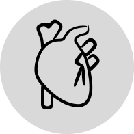

Hva er
?
Problemet
Hvis man har Diabetes, betyr det at kroppen ikke har nok egenprodusert insulin til å holde et stabilt glukosenivå.
Andel av jordens befolkning med diabetes (alle typer):
ca 6,7%
Noen av senkomplikasjonene ved diabetes inkluderer:
Nerveskade
Nyreskade
Kardiovaskulære Komplikasjoner

Retinopati (blindhet)
Å stabilisere glukosenivået er en konstant balansegang.
Selv med moderne insulinkalkulatorer, ender folk fortsatt opp med komplikasjoner!
Vår Løsning

1.
Skan
Ved å ta et bilde av måltidet ditt, beregner algoritmen i appen karbohydratinnholdet samtidig som den tar hensyn til andre viktige variabler som porsjonsstørrelse og mattype fra glykemisk indeks.
2.
Prediker
Ved å bruke disse dataene analyserer vår KI-modell glukosetrendene dine og forutsier nivåene dine opptil 4 timer frem i tid, basert på nylig aktivitet, insulinbruk, måltidsinntak og andre viktige faktorer.


3.
Anbefal
Our AI then provides personalized insulin dosage recommendations tailored to your predicted glucose levels and individual needs.